In 1987, while working for Ferranti Computer Systems in Wythenshawe, Manchester as Business Manager, we bid for a SCADA system in the province of Assam in India. It was decided that the Sales Manager (John), an Indian salesman (Rick), a senior engineer from one of my project groups (Norman), our contracts man (Harvey) and I would go out to Assam to attend the bid meeting.
These are a straight transcript of the notes that I made during the trips, the first being to Guwahati in Assam, via Dehli, and the second to our agent (Computronics) in Delhi.
Wednesday 14th January 1987 - London Heathrow
An early morning trip to Manchester airport for the family.A pity the plane didn't take off until 12:10. The first time that I have had breakfast sitting in a plane on the ground.Finally the runway was cleared of snow and the plane was de-iced and we were away.The Dehli flight from Heathrow was also delayed and was still on the ground when we got there. BA rushed us by minibus, taking our luggage directly off the plane, to terminal 4. By the time we got there the Dehli flight had been allocated its take-off slot and they would not let us get on. So BA put us (and a fellow going to Bangalore) up in the Heathrow Park Hotel for the night.
Friday 16th January - Hyatt Hotel, Delhi
Arrived in Delhi at 7am local time, feeling as though it was two in the morning (which it was in the UK). The passport control officer looked very closely at Norman's visa. For a while I thought that he was going to object.
The airport was not as crowded as I had expected and the Computronics people were there to meet us. The drive to the hotel (about 30 minutes) was quite a shock. I had not expected everything to look so run down or there to be as much poverty. No one looked particularly undernourished, but those wearing simple, drab clothes hung about them looked as though they had nothing else in the world.
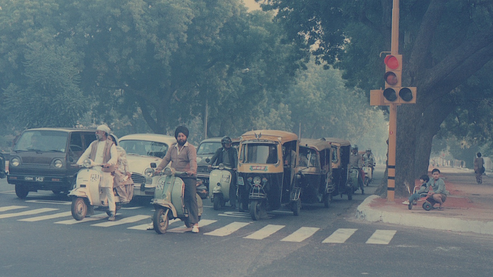The drive through the traffic had to be experienced to be believed. There were horse, bullock and camel drawn carts, bicycles, scooter (with up to four people on them) motor rickshaws, cars, busses and lorries. And people everywhere.
The hotel was a total contrast to its surroundings.Uniformed men everywhere to carry your bags. A tall, marble-lined entrance lobby with bar (complete with grand piano), seats and ponds. Sweeping marble staircases, leading to restaurants and shopping arcades. A 25 foot waterfall. Large, well furnished bedroom with double bed, large mirrors, sofa and tables, a bathroom and views over waste ground with people living in makeshift huts.
After lunch we sat with Mr Dev and went through the Computronics quote. We ate in the hotel restaurant with live Indian music. Max Elliot (our man in India) joined us. Finally got to bed after 35 hours and was woken when the operator finally got a call through to home.
Saturday 17th January - Hotel Kaber, Guwahati
A good night at the Hyatt Hotel in Delhi. After breakfast I walked through the hotel shopping arcade. I was shown wool and silk carpets at R2,700 and R6,000 respectively (5' x 3'). Sent postcards to Victoria and Paul.
During the morning we went to Computronics headquarters, met Mr Dev and Mr Lal. Dev then took us to some ministry/government office to get our entry permit to Assam.It was a good example of Indian bureaucracy, with the top man at a big desk in the corner and everyone queuing to see one of the clerks first.In spite of the pessimism we obtained our permit quite quickly.
After lunch, a pleasant buffet in the hotel, we left for the airport to catch the flight to Guwahati. The domestic flights terminal was as run down as the international terminal was splendid. The Indian Airways plane, although modern, did not look well kept at all. It was a slight relief to land in Guwahati. The airport was very primitive. Foreigners were recognised amongst the crowd by a man in no official dress who asked for our passports and permit. After much close scrutiny and waiting for our baggage we went out to the taxi that had been organised by Mr Lal.
I thought that the journey around Dehli was bad. I thought that Dehli was scruffy and dirty and there was a great contrast between rich and poor. Guwahati has to be seen to be believed. The streets are bustling with people, animals, pedal rickshaws, motor rickshaws, scooters, cars, busses and lorries. There is no order at all. The streets are filthy and the smells repugnant.
The entrance to the Kuber Hotel is lost among the shop fronts, but on the first floor there is a 'luxury' lobby and bar (The Pub). The hotel is full of anomalies.
Stepping off the plane was like stepping into a hot summer evening of a type rarely known in England.
Sunday 18th January - Hotel Kaber, Guwahati
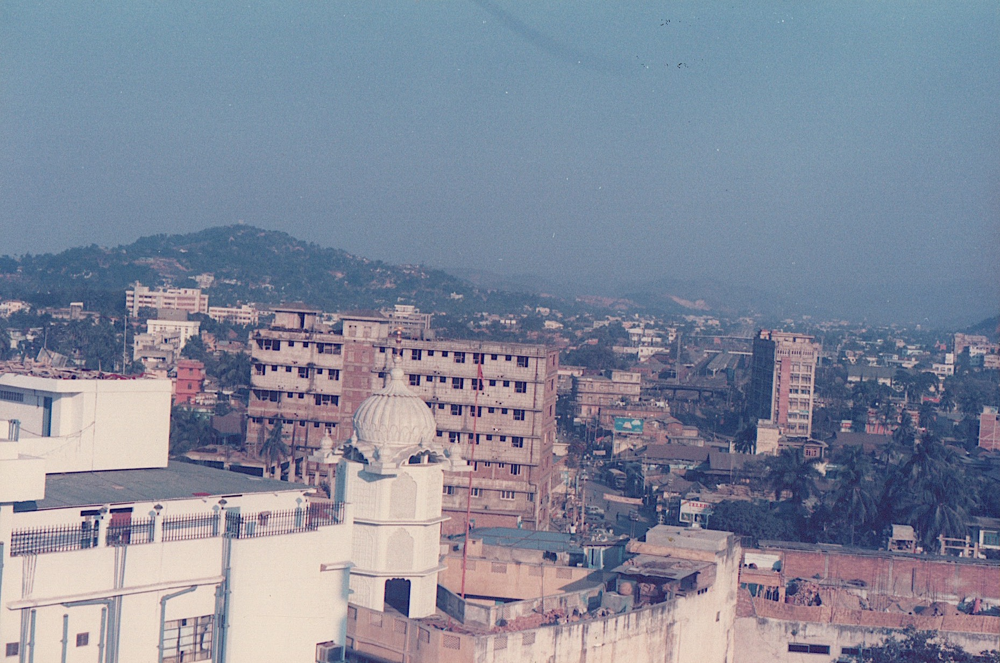Did not sleep well, the bed is hard. Got up at 7am and went for breakfast at 7:30. I was the only one in the restaurant and had waiters hovering around me all the time. I had mango juice, porridge, toast and tea. Afterwards I went to the roof garden and took some photographs. It was already very warm.
After breakfast I went for a short walk in the town on my own. I had expected the arcade to be open, but had forgotten that it was Sunday. Some shops were open. I stayed mainly on the pavements and did not walk more than a hundred yards from the hotel. I was obviously a curious sight and felt very apprehensive. The streets were filthy and the smells abhorrent.I don't seem to be able to get away from obnoxious smells.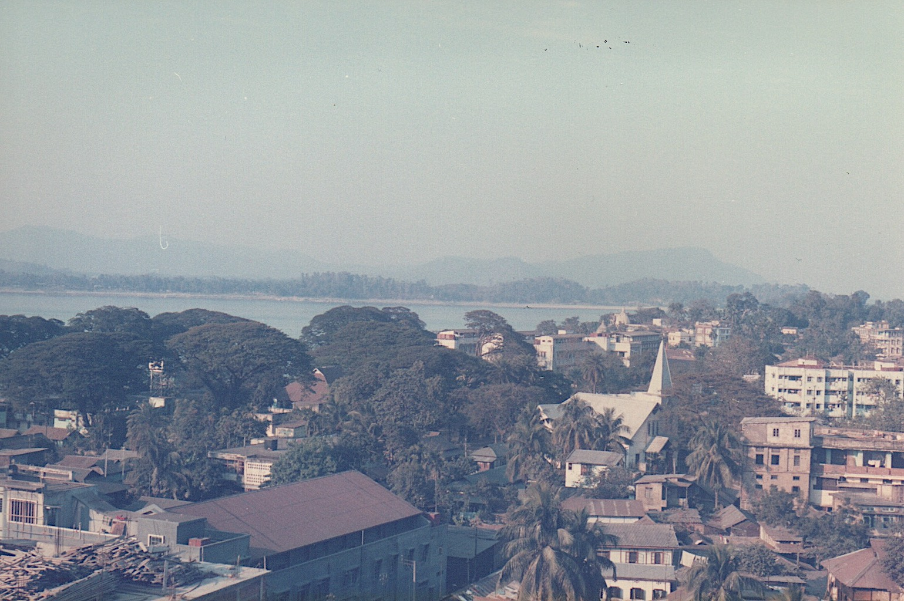
I met the others having breakfast. Later in the morning we all went for a walk around the town. Firstly down to the river, the Brahamaputra, and then back through the town. A game of cricket was being played, with the players in white, with the smells, filth and poverty all around. It was hot and I was very glad to get back to the hotel.
After lunch Rick and I tried to buy a couple of things, but the shops were closed. We then all went off by taxi (two) for the Kanrup Kamakhya, a very holy temple on a hill outside Guwahati. Our taxi broke down on the way to the top and we walked a short way. We had to take our shoes off to walk around the grounds of the temple and only Hindi and Sikh were allowed into the shrine.
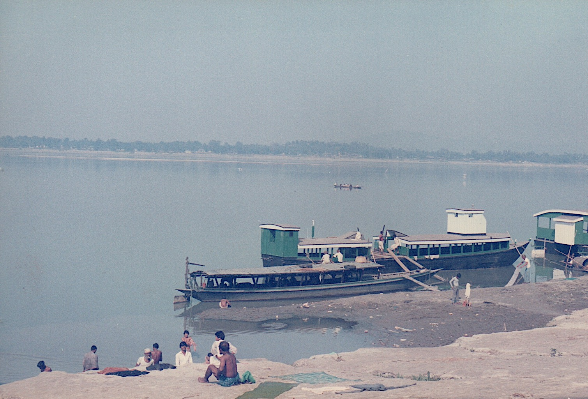Somehow Harvey got in with Rick and Mr Lal. When he came out he'd had his hair wetted with putrid water and had red and black spots in the centre of his forehead. We hope his wish comes true. Meanwhile we had been talking to a Sikh who worked for the Indian Railway and we rang some bells. [I remember that the Sikh gentleman was very well dressed in a blazer and tie. We were walking back down the hill with him when he realised that he had left his shoes at the top. Apparently in India the Sikhs play the same role as the Irish in English jokes.]
The view from the top of the temple hill, over the Brahamaputra and Guwahati, was quite spectacular, but it was too dark to take a photo. When we got back from the temple we all washed our feet and changed our socks (although I don't know about Mr Lal).
The journey back was hair-raising and after a meal we met Mr Kaul from ECIC to talk about the bid. He did not look you in the eye and his chief technical man was very quiet. The other two did not say much and they all seemed frightened of Kaul.
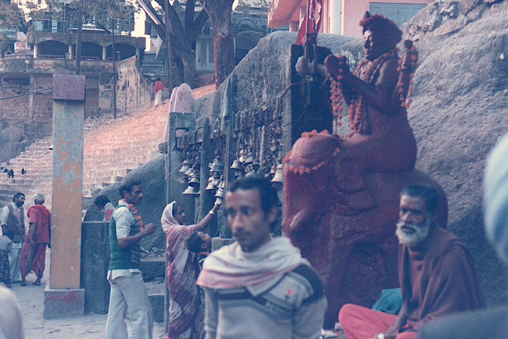On returning to my room I tried to have a shower, but there was no hot water.
Monday 19th January - Hotel Kaber, Guwahati
Started the day with a 'hot' shower after a poor night's sleep.
We were soon called to the OIL Headquarters to support ECIL. The OIL panel was being very tough and dogmatic. Luckily it did not last long, but the journey back was worse than the journey there. So many people seem to be doing so little for so much of the time.
Following lunch we went on a short shopping trip. The arcade beneath the hotel was a marked contrast to the shops elsewhere in Guwahati. I would happily have gone into any of them.I bought a leather bag in one in which to keep my valuables. R650 was a little more than I had envisaged paying. They had cheaper ones, but this was of good quality.
The afternoon and evening (apart from nearly three hours for dinner!) was spent in The Pub working. ECIL came for about four hours. We do not seem able to get the waiters to speed things up a bit. Mondays and Tuesdays are dry days in Assam.
None of us enjoy being in our rooms. If the quality of the accommodation matched the arcade and hotel lobby then our stay would be better.
Finally got to bed at 1pm.
Tuesday 20th January - Hotel Kaber, Guwahati
Finally a good night's sleep and a fairly late start; 10am before we got down to work. However, we worked hard all day and evening at our presentation and questions likely to arise. Mr Lal was able to be of a little use today. Most of the time he was a hinderance.
We worked at the dinner table tonight until after 11pm. The waiters cannot make us out.
It takes so long to get served. Even when the food does arrive they have no concept of serving all the dishes together. But this evening my soup and main course arrived at the same time!
Wednesday 21st January - Hotel Kaber, Guwahati
We had an early start this morning. Six o'clock call and breakfast in my room. I could not eat all my breakfast. Nerves I think before our presentation.
We got to the OIL headquarters for 8am. The presentation went off quite well, but the discussions ran on till 1pm. Overall it seemed to go well and we were asked to return at 5pm. By the time we got back to the hotel and had lunch it was nearly time to return to OIL. They simply had all the bidders standing around outside, said that no one had complied with their spec and handed out a sheet of paper which was to be returned by 9am on Saturday.
Two nerve wracking journeys in one day is as much as my system can stand. Particularly when one was with Mr Lal.
Another Computronics man turned up this morning to accompany us to the presentation. He knew nothing of the job. How very odd.
The evening was spent with ECIL discussing the situation.I had some beer, the first since leaving the UK.
Another late night.
Thursday 22nd January - Hotel Kaber, Guwahati
After the journeys of yesterday I did not go out of the hotel. We found a spare double room and worked. After trying the local typist we sent him away and kept his typewriter. I then became the typist.
Harvey and Rick failed to get permits to go to Shalong, not that we would have had time. More disturbingly they also failed to get confirmation of our flights tomorrow. This may be my last night in Guwahati!!
Since it is a national holiday this weekend and Monday we cannot do any business at Computronics until Tuesday. That means that John, Harvey and I will need to stay until the early morning Wednesday flight (Rick is going to Bombay to meet his family).
Mr Lal left today, thank goodness.
Friday 23rd January - Hyatt Hotel, Delhi
Up early, shower (only ever hot water in the morning), quick breakfast and back to the typewriter. I typed from 8:15 till one o'clock and then all was done.
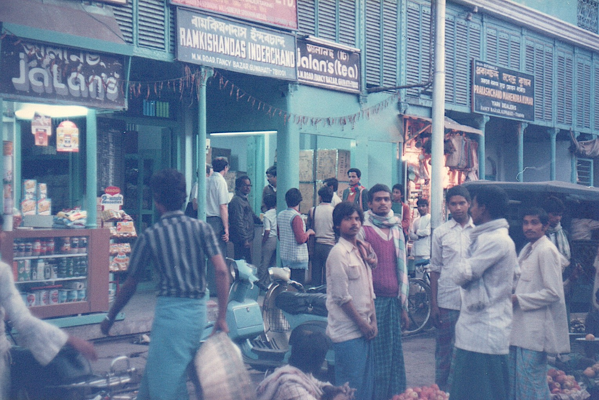After lunch John and Rick took our package to Noonmatic. When we had packed and settled our bill (only £135 for six nights and all meals) we went tea hunting. We found a tea shop in one of the bustling streets and bought some of the best Assam tea. The young man asked us to write to him and tell him if we liked it. Each purchase was weighed out and put in a paper bag on which he had stamped the name of the shop. [The photo shows John and Harvey at the tea shop.]
We were a little late back from our tea hunt, which worried Norman because we had to leave for the airport. As it happened it didn't matter since the plane was delayed by an hour and a half.
At the airport we found a guide to the North East States and met the Willowglen representative. He was on his way back to Calgari.
We seemed to have been in Guwahati for a month and I seemed to be getting used to it. Just ever so slightly. Would I want to go back there again?
The Computronics man was at the airport to meet us and we reached the Hyatt at 12:15. After some confusion about bookings we got our rooms (luxury) and I managed to call home.
Saturday 24th January - Hyatt Hotel, Delhi
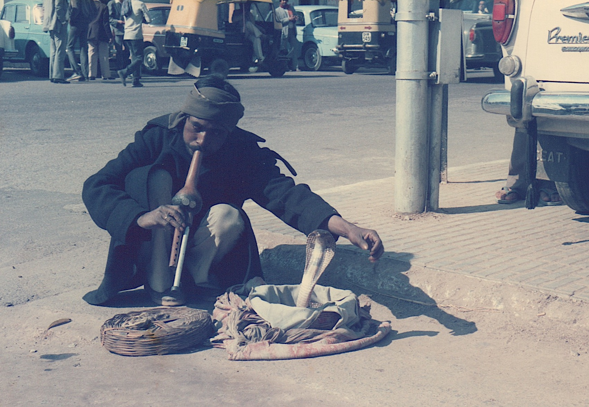A luxurious night's sleep. I'd almost forgotten what a real bed was like. I was the first down to breakfast, after which I bought a small guide to Delhi. It was nearly eleven before we set off in a taxi for Delhi centre to shop. We went first to Rick's friend's shop. They sell goods made of cloth and I bought a table cloth with napkins. Whilst John was trying to arrange our air tickets home, I bought two paintings on silk from a street seller. Shortly afterwards we took photographs of a snake charmer [just off Connaught Place].
Most of the day was spent being pestered by beggars, street sellers and shoe shine boys. One fellow offered to clip my nails or clean out my ears. He even had references in many languages.
On the way to the Craft Centre an unshaven Kashmiri tried to interest me in carpets. It was probably a mistake to show any interest since he was waiting for me later, even after we had eaten. In the Craft Centre I bought a Punjabi suit for Victoria and a silver necklace for Angela. Paul is a problem. I bought a wooden cobra from a street seller (probably for too much money), but I don't know what else to get him.
The Kashmiri finally got us to the carpet shop. Up stairs and in the back. They proceeded to try to sell me a pair of silk rugs for over £400 each. I ended up buying a wool/silk rug for £150, which was more than I had intended paying. I could have got a wool, machine made rug for £90, but this one is hand knotted from Kashmir.
Talking to Rick's friend afterwards it seems that I paid a little more than he would have, even though the sellers made it appear as though it was a very special price to a friend.
We had a very late, but very good meal in the hotel restaurant. We always seem to end up ordering too much.
On the second attempt I managed to dial directly through to home.
We had booked a car and an early call tomorrow to take us to Agra to see the Taj Mahal.
Sunday 25th January - Hyatt Hotel, Delhi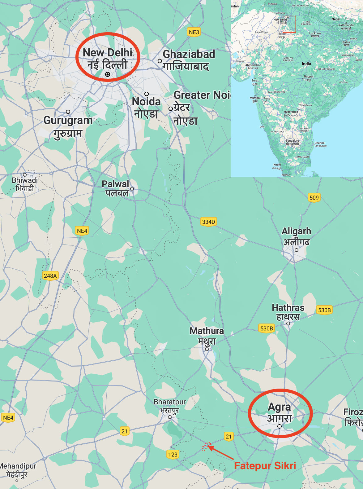
A day never to be forgotten. I've seen elephants, camels, dancing bears, monkeys, parrots and bullock carts by the score. I've seen Akbar's Tomb, the Taj Mahal and walked the courtyards of Fatehpur Sikri. And now I am tired.
The drive to Agra took about four hours. The car was comfortable and the driver good (by Indian standards).Just before Akbar's Tomb a lorry had caught fire, which was quite spectacular, especially when the tyres exploded. Between there and the Taj we had a flat tyre. We then realised that there was not much tread on any of the tyres and even less on the spare. We looked around a very expensive jewelers whilst the wheel was changed.
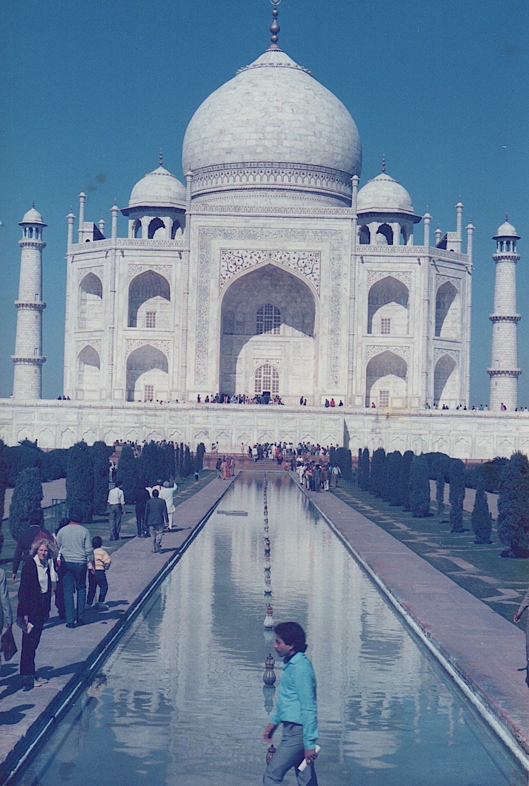The Taj Mahal was spectacular and unbelievable in its scale and intricacy.The sun reflecting from the white marble was too bright for the eyes. The carving and inlay work was superb and its proportions have to be seen to be believed. We had to take our shoes off to walk around the marble part. We saw marble inlay work at a shop on the way out.
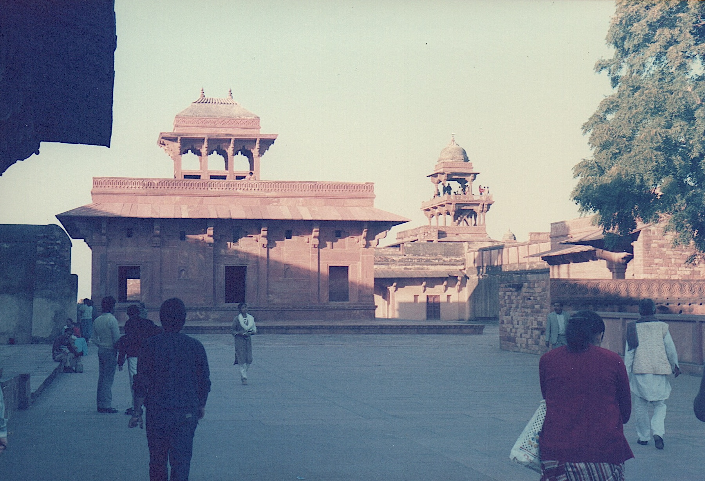At Fatepur Sikri we hired an aged, white-haired man as a guide. He turned out to speak very good English and was both informative and humorous. He showed us around Akbar's Palace [built in 1570] and then around the Holy Man's Tomb (another shoes off job). His son had a shop in the walls of the latter, which, of course, was part of the guided tour. His carved marble and inlay work was quite cheap. Bought a Buddha and three animals.
Finally back to the Hyatt. An eight in the morning till ten at night trip.
Monday 26th January - Hyatt Hotel, Delhi
Today is Independence Day and a national holiday.There was a procession in Delhi, but we decided that it would be too crowded for us to see anything, so we stayed in the hotel.The shops in the hotel are closed and it is a 'dry' day.
After a late breakfast, John, Rick and I played tennis. Or at least we tried to. It was quite apparent that I had not played to 20 years. John was much the same, although Rick had a bit more control.Harvey has a touch of colic.
Frank Humphries and Brian Price turned up. Frank is giving a paper at a conference in Delhi and they are hoping to follow up the power station business with Max.
The afternoon was spent going through price schedules and working out duties and tax in preparation for tomorrow.
We tried the Chinese restaurant in the hotel and ate with chopsticks. It was not bad for a change, but I prefer the Indian dishes.
Tuesday 27th January
We got a taxi to Computronics in the morning. THey don't seem to start until about 10:30. Ravi Singhal had set up their PC-AT which I used to prepare our tax and duties summary.
We went back to the Hyatt for a quick lunch before going to Connaught Place to a small bookshop called Bookworm.I bought 'All India' (they had sold out and it took them ten minutes to get some) and a small guide to Delhi, Agra and Jaipur. We afterwards went to a craft shop near Rackesh's shop.There I bought an ivory necklace for Victoria.
Back at Computronics we met Vivek Singhal and finished off our work.
In the evening it took half an hour for a taxi driver to find Max Elliot's house.We stayed for a quick drink and then set off back to the hotel to shower and pack.
Madan Singh came for us at 11:30pm to set off for the airport. Our last drive in India. The drive to the airport seemed very different to that first drive to it and I for one felt very weary. It certainly seemed more like a month since we had arrived, rather than less than two weeks.
We boarded the aircraft at about 1am for our journey to Amsterdam and then on to Manchester.
The Follow-up Visit
Later that year we (and our installation contractor ECIL) were invited to attend the OIL offices in Delhi to give a presentation and answer questions. This time just Rick and I went.
Saturday 28th November
To Manchester Airport in the fog for 6am. Shuttle to Heathrow. 10am flight to Delhi (Thai Airways).
Arrived in Delhi at about 1am after a pleasant flight. George was there to meet us and take us to the Maurya Sheraton. Phoned home, had some coffee and finally went to bed at about 4am (10:30pm UK time). We are in the Sheraton Tower, which costs a lot (1,550Rs per night), but provides some extra facilities. For example, we have use of the Tower Club on the top floor.
Sunday 29th November
Got up at 8:50 to see the surroundings in daylight. My room looks out on to a barren waste of concrete flats and bare earth. Not an inviting site. The hotel, of course, is plush, with many restaurants, pool, tennis court and health club.Most of the Europeans here are German. Delhi, it seems, is full of Russian trade delegations.
After a light breakfast in the Towers Club I investigated the shopping arcade and then took some work out by the pool. Met Stuart Mockford there and later Max turned up. Had a triple-decker sandwich for lunch before returning to the pool-side.The sky is blue, the sun strong, but with a light breeze that makes it very pleasant. Unfortunately, the number of flies drove me in.
Late in the afternoon I tried out the gymnasium and sauna.
Met Stuart, Rick, Tom Delaney and Max in the bar at 7pm. Max's wife, Margaret, joined us after seeing the Bolshoi ballet. We ate in the Chinese restaurant in the hotel. It took from 8:30 till midnight!
Monday 30th November
A ceiling panel in my room came down during the night. It was hinged on one side so I had to duck under it to get to the bathroom or out of the room. A maintenance man came and refitted it.
Rick and I spent the morning (nothing happens before 10am) sitting by the pool (in the shade since the temperature is 27°C by midday) going through questions that had been asked of other vendors. At lunch time Ravi Shingal turned up. We had lunch and then he drove us to the Computronics office. We checked various documents and had a word with Vivek Shingal. I still don't know how much faith to put in the things that he says. I also have difficulty tuning in to the Indian accent.
Madan Singh drove us back to the hotel. Hell raising! He took to the back streets rather than stay on the ring road. They were wide, but full of vehicles of all descriptions and absolutely no road discipline. (Indians like to use the word 'absolutely' in place of simply 'yes' or 'I agree'.)
In the evening a TCIL man joined us for dinner. We ate vegetarian food (since both Rick and the TCIL man are vegetarians) in one of the hotel restaurants. There was live 'ghazal' music (improvised folk?) whilst we were eating. Also, the restaurant had fountains and water running down marble parts of the wall. There is a water shortage in this region. Max only has water for an hour in the morning and an hour at night.
Tuesday 1st December
The morning spent working in my rom and later by the pool, preparing responses to questions. Had a sandwich by the pool (very dry bread, no wonder they usually toast them) before Ravi collected us to go to the ECIL office in the centre of Delhi. I thought that the Computronics offices were dingy, they are luxurious (and clean) compared to the ECIL offices. You could not see out of the windows for grime.
The meeting resulted in a number of actions for us, including the preparation of a presentation. We went back to CI to work. Being driven is still, as the Indians say, nervewrecking. We worked there until after ten and then returned to the hotel and continued until 11:30. We had eaten a sandwich at CI, but went down for a snack before going to bed.
It sounds as though there will be 20 people at tomorrow's meeting and I have to give the full presentation.
Wednesday 2nd December
We were at the OIL offices just before 10am as planned. The meeting did not start until five minutes to twelve. My presentation seemed to go well and after some questions, mainly directed at ECIL, we adjourned for lunch at 1:45pm. We all had to go our separate ways for lunch and return at 2:45. We went to an hotel in the centre of Dehli. It is new and open to the roof inside (~20 stories) with all the rooms around the outside and lifts running up and down the wall from a small lake at the bottom.
We were back at 2:50. The meeting did not restart until after 3:30 and even then not everyone had returned. ECIL had not expected to be questioned on their part of the bid, but they were slated and did not respond well. We finished at about 5:30 and returned to the hotel.
We were invited by the hotel management to cocktails in the evening. Everyone gets invited. We spent an hour talking to a trainee manager and then went to the Taj Mahal hotel where Tom Delaney was staying. He took us to a restaurant there where they had Rajasthan dancing. There was a wedding reception going on in the hotel also, complete with band on the entrance.
Thursday 3rd December
First to CI to have the political strategy explained by Vivek. All decisions seem to be made outside the bureaucracy. We then spent some time at OIL checking their minutes of the previous day's meeting and adding some extra bits ourselves.
We were able then to have some lunch and call into the Craft Emporium to buy a few small presents before meeting ECIL. We agreed responsibilities with regard to answering the questions. Then back to CI to again talk with Vivek. I had left my passport and ticket with them in the morning for a reservation to be made. I was a little concerned that they had not yet returned.
We had been invited to dinner at Max and Margaret's. By the time that we left CI we were already late, so we had no time to go back to the hotel for a shower and change of clothes. Samson, their cook, really did us proud. The problem that they've had with telephones (or the lack of them) and cars could only happen in India.
Friday 4th December
The day was scheduled for sightseeing and I expected to be leaving in the early hours of Saturday morning.
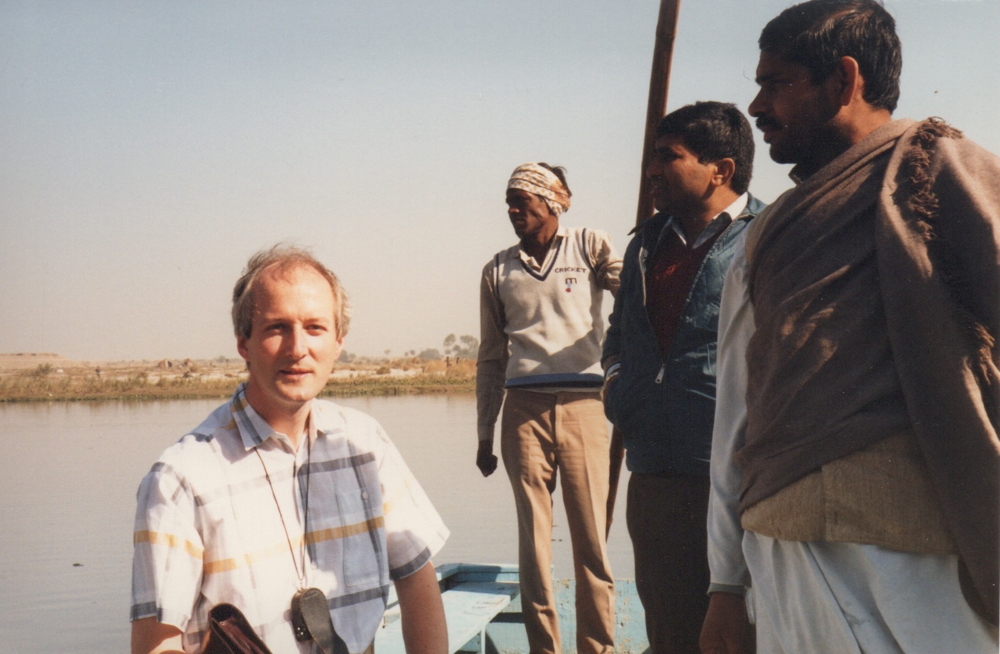First on the agenda was to sprinkle Rick's mother-in-law's ashes into the river Yamuna. We went to a cremation ground called Nigambodh Ghat, picking up a pundit on the way. There were a number of funeral pyres there, but we went straight down to the river where we all got into a punt and were taken out to the middle where the water was flowing well. The ceremony then took place, with me taking pictures of it and Rick looking somewhat unsure as he had to sprinkle handfuls of ashes into the water.
From there we went to Raj Ghat, which is a shrine to Gandhi, and then went off to the Red Fort. This side of Delhi is much older and the scenes are very reminiscent of Gwahati. I even saw an elephant being ridden along the road.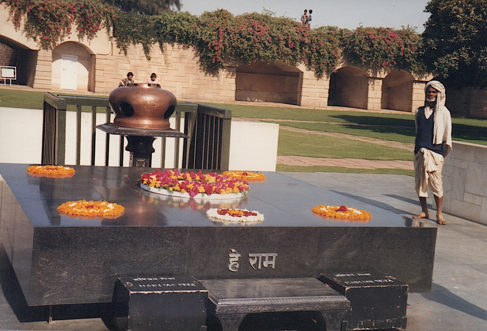
We drove around the government buildings and past the President's Palace before going to the DPC to have lunch with Max. Following that we went to the Qutb Minar with its tall tower and iron post. We then went to Connaught Place to do some more shopping. I almost had my feet measured (or at least drawn around) for some sandals. Max said that he would have brought them over at Christmas. However, there wasn't a style that I liked.
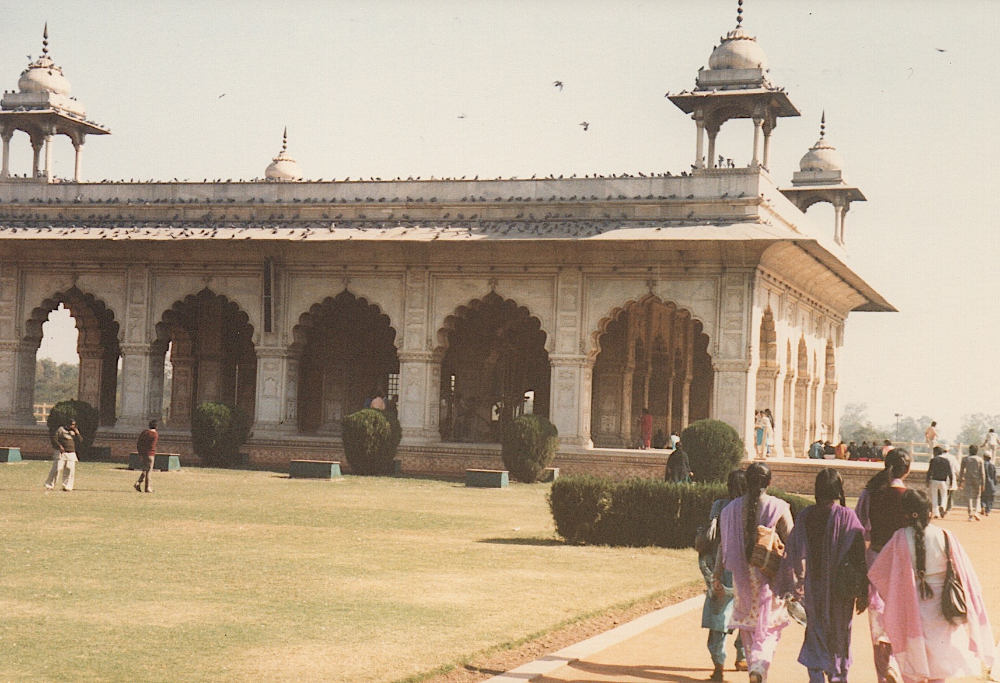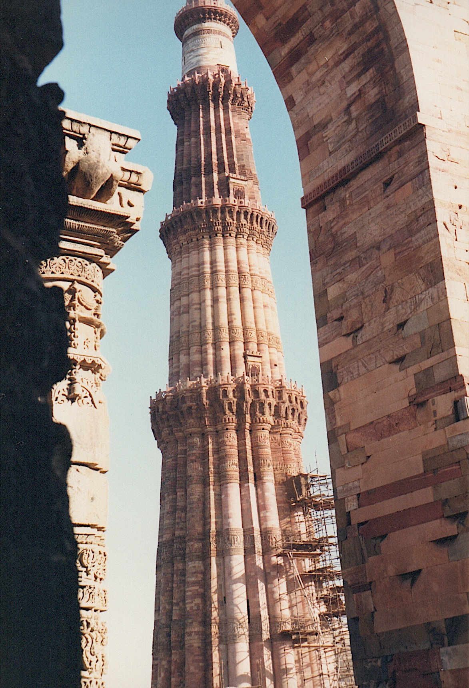I had checked out of the hotel in the morning and left my bags in Rick's room. Ravi came over with my ticket and to join us for dinner and Stuart Mockford had also returned from Bangalore. After watching Tootsie (there were two channels of films and British TV programmes playing all day) we went to the Chinese restaurant at about 10pm. Madan Singh was to collect me at 11.
I had left my bags in Rick's room but ended up with Stuart's key. I had to get the lobby manager to come and open the door for me. We eventually left at 11:30.
Getting through the airport was traumatic. If the plane had not been two hours late, half the passengers would have missed it.
Firstly there was the need to pay airport tax. Having been directed to one bank counter, I found that I had to go to another, the one with the long queue. Following that there was check-in. It took an hour. Every time someone was checked in at any of the counters there was a problem which could only be solved by one man. A girl took some of the business class tickets into a separate office. That took even longer. All the time, wealthy Indians with first class tickets expected to go straight to the front of the queue.
After check-in it was passport control. Another hour. Both on the way in and on the way out you go through passport control (queues through a number of booths with computer terminals) and then a few soldiers on the other side insist on checking your passport.
I eventually went for a quick drink in the BA lounge before going through the hand baggage check and to the gate. Even then there was a wait of 45 minutes before boarding.